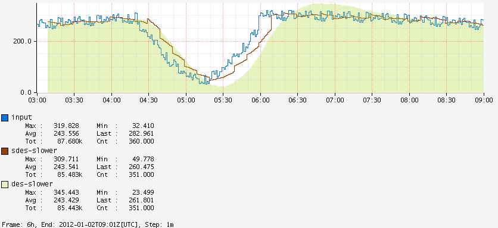
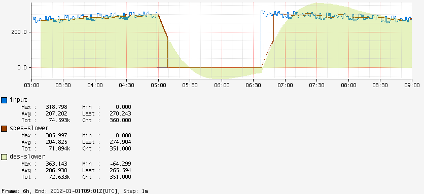

sdes
Input Stack:
|
⇨ | Output Stack:
|
Sliding double exponential smoothing - a deterministic variant of :des that provides consistent predictions regardless of when data feeding starts. This operator is recommended over standard DES for alerting and analysis where reproducible results are essential.
Parameters¶
- expr: The time series expression to apply smoothing to
- training: Number of data points to use for initial training before generating predictions
- alpha: Smoothing factor for the level component (0.0 to 1.0, higher = more responsive to recent changes)
- beta: Smoothing factor for the trend component (0.0 to 1.0, higher = more responsive to recent trend changes)
How It Works¶
SDES solves the determinism problem of standard DES by using two alternating DES functions:
- While one function is training on new data, the other provides predictions
- After the training window, roles are swapped
- This ensures predictions for any given time are always the same
Execution Timeline¶
F1 | A |-- T1 --|-- P1 --|-- T1 --|-- P1 --|-- T1 --|
F2 | A | |-- T2 --|-- P2 --|-- T2 --|-- P2 --|
Result:
R |-- NaN -----|-- P1 --|-- P2 --|-- P1 --|-- P2 --|
Where:
- A: Both functions wait for training window boundary
- T1/T2: Training phases for each function
- P1/P2: Prediction phases alternating between functions
- NaN: No predictions until first training completes
Advantages Over Standard DES¶
- Deterministic: Same input always produces same output
- Alerting-friendly: Consistent thresholds for alarm tuning
- Faster adaptation: Responds more quickly to sharp changes
Visual Characteristics¶
The alternation between functions can create visual differences compared to standard DES:
Gradual changes may appear choppier:

Sharp changes are detected faster:

Examples¶
Applying SDES with 5-point training, alpha=0.1, beta=0.5:
| Before | After |
![]() | ![]() |
name,requestsPerSecond,:eq, :sum, :per-step | name,requestsPerSecond,:eq, :sum, 5,0.1,0.5,:sdes |
Related Operations¶
- :des - Standard double exponential smoothing (non-deterministic)
- :rolling-mean - Simple moving average (simpler but less sophisticated)
- :trend - Deprecated moving average operator
Since: 1.5.0